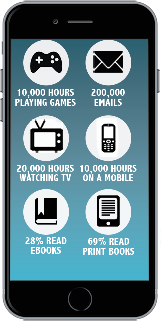
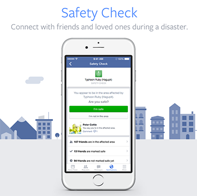

What is Technology's Role?
Physiological Effects
Not often the first thought when one considers technology, it remains true that technology has had quite an impact on the human brain. As mentioned earlier, the signs of addiction to the internet show up on the brain itself. Heavy usage of technology has also affected behaviors of those power users - which includes most Millennials, as evidenced by the graphic of typical usage behaviors below. Sometimes the change is negative, sometimes its positive, and sometimes the change is just that, a change to something different.
Multitasking
A common claim made of Millennials is that they are multitaskers. In this case multitasking refers to people who talk on their phone, text, check social media, read an article, and carry on a physical conversation all on a range of devices. This claim is made by most everyone of Millennials, including Millennials themselves who believe they are exemplary multitaskers. Others say Millennials are multitaskers and don't mean it to be a good. Based on our research, there's far more support for the latter. There are multiple studies that prove that the human is not only incapable on a basic level of capable multitasking, but that 'power multitaskers' are utterly fooling themselves about their abilities.
One study performed by Stanford attempted to determine if self-proclaimed multitaskers had some capability that made them more proficient than others. To accomplish this they went through a number of tests, performed by those self-proclaimed masters as well as those who don't make such claims. The first test was to determine the focus of the participants, and from the beginning the non-multitaskers performed better "because the high multitaskers showed they couldn't ignore things" (Standford News). This might not initially seem like a bad thing, after all if the multitasker doesn't ignore things then their brains must be able to handle the extra processing, right? However, this is a problem because it means that people who claim to be good multitaskers are actually training their brain to be unable to ignore irreverent data to focus on the desired information.
For the next tests Millennials did not fare better. "The high multitaskers did a lousy job at remembering" compared to the non-multitaskers, another unforeseen consequence of trying to do it all at once (Standford News). So far, non-multitaskers have better focus, and better memory. The next finding was far more telling than even the other two combined. Almost unbelievably, "the heavy multitaskers underperformed the light multitaskers...[when] switching from one thing to another" (Standford News). This is huge. Switching between tasks is the definition of multitasking and this study has found that non-multitaskers did this better.
In fact, the push towards multitasking as a necessary skill might be actively more dangerous than beneficial:
"Serious media multitasking is beginning to be recognized as a neural addiction. Multitasking increases production of the hormones cortisol and adrenaline. Increased amounts of these hormones overstimulate the brain, causing fuzzy thinking. In addition, the prefrontal cortex prefers external stimulation and rewards reading every post, Internet search or message with a burst of endogenous opioids. Essentially, this feedback loop rewards the brain for losing focus" (Computer World).
Attention Span
Another sacrifice at the altar of multitasking is the declining attention span. The more things that distract us, the worse our attention gets. Humans used to be able to bost 12 seconds of coherent thought (Time). For reference sake, a goldfish - one of the shortest attention spans in the animal kingdom - averages 9 seconds (Time). Due to the effect of technology and "digitalized lifestyle" humans "now generally lose concentration after 8 seconds" (Time). That is a whole second less than a goldfish. While that might not seem significant, it should ping on your radar because there's no reason this decline would stop declining. Particularly if there's no change in how we handle our usage of technology.
How Millennials Remember Things has Changed
This is about how technology has encouraged brains to remember how to find information rather than the information itself based on a few studies. "Betsy Sparrow, an assistant professor of psychology at Columbia, wondered whether people were more likely to remember information that could be easily retrieved from a computer, just as students are more likely to recall facts they believe will be on a test" (New York Times). The findings of the study provided the insight that people "were significantly more likely to remember information if they thought they would not be able to find it later" (New York Times). A similar insight is that when participants had to recall specific information in addition to the computer folders it was saved in, "the researchers were surprised to find that people seemed better able to recall the folder" (New York Times).
These findings clearly demonstrate how technology has impacted memory recall. How many times have you needed to make a phone call or fill out a form and not remembered the phone number without your cell phone? Likely, you know exactly how to find the number, whether its in your phone or a physical location somewhere. Why the study's findings are significant is that rather than an occasional method, recalling where information is stored rather than the information itself has become a normal occurrence.
Global Communication, Social Media and the News
Twitter, Facebook, Snapchat, Vines, YouTube, LinkedIN, Instagram...the list goes on. Social media and communication technology has changed how Millennials interact with and understand the world on a fundamental level. While researching this important branch of the technology discussion, those of us working on the project talked about the many international friends we have had growing up, and how this glimpse into other cultures served as a poignant defense against ethnocentrism. Although this new level of open communication is available to all people the levels of interconnectedness seen in Millennials is far higher than most other generations.
The different types of social medias have also succeeded in transforming large masses of people into communities. These communities, groups, lists or pages continue growing by sharing information and ideas with one another. The power of social media lies in it's ability to freely share content that is easily accessible for consuming. Companies, organizations and individuals see the importance of utilizing social media as a powerful, and arguably one of the most effective tools for shaping the way we think and feel about certain ideas or products.
Reflecting this, Millennials as a generation have the highest numbers of global students with "more than 283,000 U.S. students" studying abroad in 2013, about 35% of the total number of international students in the same year (Lindsey Pollack).
The rise of social media has even caused changes in disaster response by both the government and the people caught in those disasters who had lost the ability to make calls with their cellphones and who then "looked to resources including Twitter and Facebook to keep informed, locate loved ones, notify authorities and express support" (Scientific American).
An example of this was seen as recently as March with the attack on Brussels. Once again, because of the disaster, mobile networks were overloaded and an unreliable form of communication for those desperately seeking word from loved ones, and once again social media stepped up. Facebook even "activated its 'Safety Check' tool, which is a feature that enables people listed as being in the region to notify their network if they are 'safe' or not (CNBC). This tool and other social media check-ins are possible even when mobile networks are overwhelmed with traffic, which means that families and loved ones can have instantaneous feedback.
This instant nature of social media in general lends itself well to news reporting, and not just of disasters. In fact, in recent years social media has had a considerable impact on news reporting as amateurs and witnesses can post their own pictures and videos online, many of which are used as factual support by more professional news sources. For Millennials, over 50% reported that they used Facebook as a news source, Millennials are also unique in that they have begun using Snapchat and Instagram as news sources (Reuters Institute). However it is noted that many times receiving news from these social media outlets is often accidental, as the users may simply encounter the posts on accident while online for different reasons (Reuters Institute). Twitter stands alone among most other social media as 62% of respondents reported Twitter as "a useful source of news in its own right" (Reuters Institute).
A study by ING revealed the flipside of this growing reliance on social media by revealing the insight "that a majority of journalists feel less bound by journalistic rules on social media" (ING). It seems that the price to pay for instant gratification in news is reduced time for fact-checking and difficulty of in-depth reporting. The preceding sentence is about 135 characters. This is 5 short of the Twitter 140 character limit, and is very clearly hardly enough to accomplish a thorough understanding of anything.